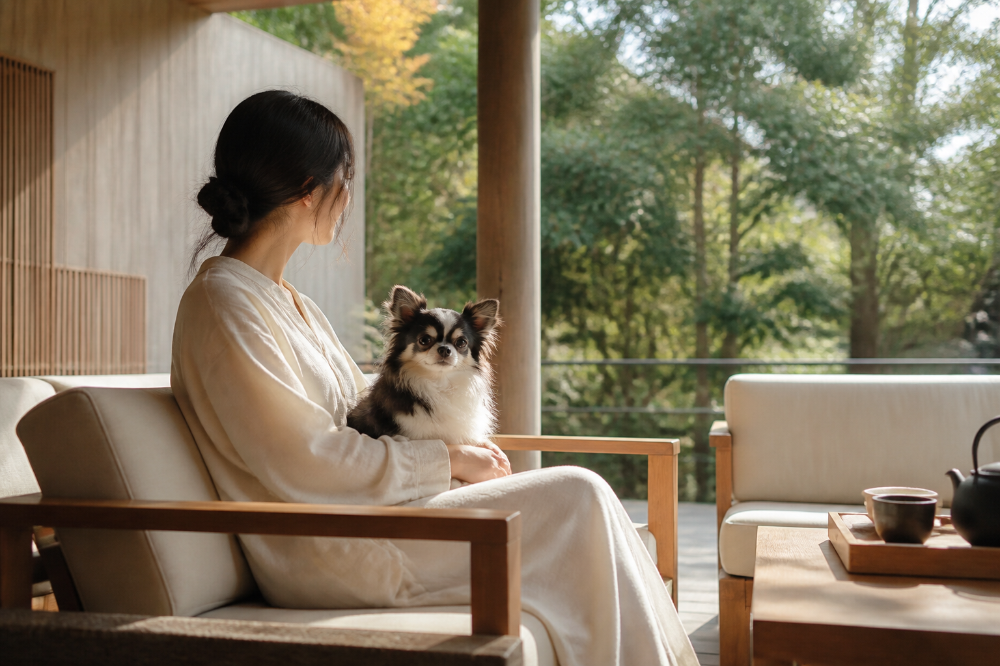

狗の郷
ペットと泊まれる宿。周辺の観光・食事情報や、ペット同伴可能な施設の条件も公式案内で確認できます。
公式サイトを見る →
ペットと一緒に旅行したい人向けに、ホテル・旅館・リゾートを紹介します。部屋のタイプ、同伴できる動物、食事、利用条件は予約前に公式情報をご確認ください。
ペットと泊まれる宿。周辺の観光・食事情報や、ペット同伴可能な施設の条件も公式案内で確認できます。
公式サイトを見る →阿蘇でペットと過ごせる宿泊施設。部屋タイプや利用条件は公式案内で確認しましょう。
公式サイトを見る →阿蘇でペットと泊まれる宿の候補。宿泊人数やペット同伴条件を予約前に確認してください。
公式サイトを見る →ペットと泊まれる海辺のリゾート。ペット用の食事や備品、宿泊条件を公式案内で確認できます。
公式サイトを見る →小型犬から大型犬まで対応する宿として紹介されています。施設公式サイトは安全確認中のため、まずはHonda公式の施設紹介をご確認ください。
Honda公式の紹介を見る →阿蘇外輪山の中腹にある宿です。ペット同伴客室、屋根付きバルコニー、ドッグランが案内されています。犬・猫のサイズや頭数、利用条件は予約時にご確認ください。
公式案内を見る →ペットと同じ部屋に泊まれる全室離れの宿です。敷地内にドッグランがあり、温泉付きの客室が案内されています。
公式サイトを見る →阿蘇の自然の中で、ワンちゃんと一緒に過ごせる宿です。客室・利用条件は公式サイトでご確認ください。
公式サイトを見る →ペット同伴OKのグランピング・キャンププランがあり、施設内にドッグランもあります。プランごとの条件を予約前にご確認ください。
公式サイトを見る →ペット宿泊可能な離れコテージがあるペンションです。宿泊できる部屋や頭数などの条件は公式案内をご確認ください。
公式案内を見る →